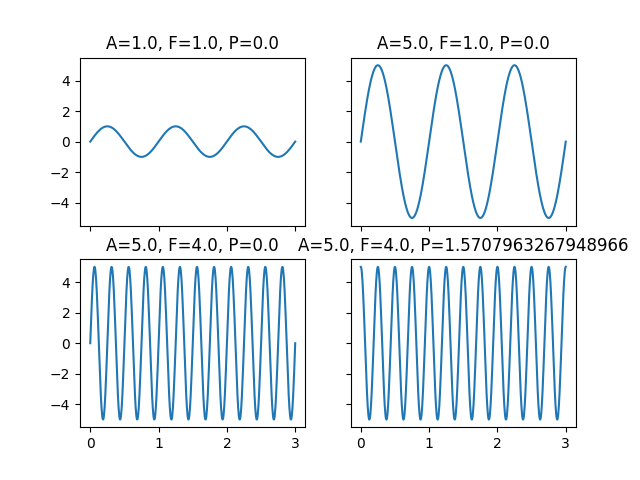

Note
Go to the end to download the full example code
Subclassing BaseObj - Simple Pendulum
This example shows how to subclass easyCore.Objects.Base.BaseObj with parameters from
easyCore.Objects.Base.Parameter. For this example a simple pendulum will be modeled.
Imports
Firstly the necessary imports. Notice that we import numpy from easyCore. This is not done for any reason other than saving time from multiple imports.
from easyCore import np
from easyCore.Objects.ObjectClasses import BaseObj, Parameter
import matplotlib.pyplot as plt
Subclassing
To include embedded rST, use a line of >= 20 #’s or #%% between your
rST and your code. This separates your example
into distinct text and code blocks. You can continue writing code below the
embedded rST text block:
class Pendulum(BaseObj):
def __init__(self, A: Parameter, f: Parameter, p: Parameter):
super(Pendulum, self).__init__('SimplePendulum', A=A, f=f, p=p)
@classmethod
def from_pars(cls, A: float = 1, f: float = 1, p: float = 0):
A = Parameter('Amplitude', A)
f = Parameter('Frequency', f)
p = Parameter('Phase', p)
return cls(A, f, p)
def __call__(self, t):
return self.A.raw_value * np.sin(2*np.pi*self.f.raw_value*t + self.p.raw_value)
def plot(self, time, axis=None, **kwargs):
if axis is None:
axis = plt
else:
axis.set_title(f'A={self.A.raw_value}, F={self.f.raw_value}, P={self.p.raw_value}')
p = axis.plot(time, self(time), **kwargs)
return p
Single Example
To include embedded rST, use a line of >= 20 #’s or #%% between your
rST and your code. This separates your example
into distinct text and code blocks. You can continue writing code below the
embedded rST text block:
p1 = Pendulum.from_pars()
# Another pendulum with Amplitude = 5
p2 = Pendulum.from_pars(A=5)
# Another pendulum with Frequency = 4
p3 = Pendulum.from_pars(A=5, f=4)
# Another pendulum with Phase = pi/2
p4 = Pendulum.from_pars(A=5, f=4, p=np.pi/2)
Plotting
Multiple Examples
To include embedded rST, use a line of >= 20 #’s or #%% between your
rST and your code. This separates your example
into distinct text and code blocks. You can continue writing code below the
embedded rST text block:
pendulum_array = [Pendulum.from_pars(p=phase) for phase in np.linspace(0, 1, 3)]
fig = plt.figure()
for pendulum in pendulum_array:
pendulum.plot(t, label=f'Phase = {pendulum.p}')
plt.legend(loc='lower right')
fig.show()
Total running time of the script: (0 minutes 0.797 seconds)